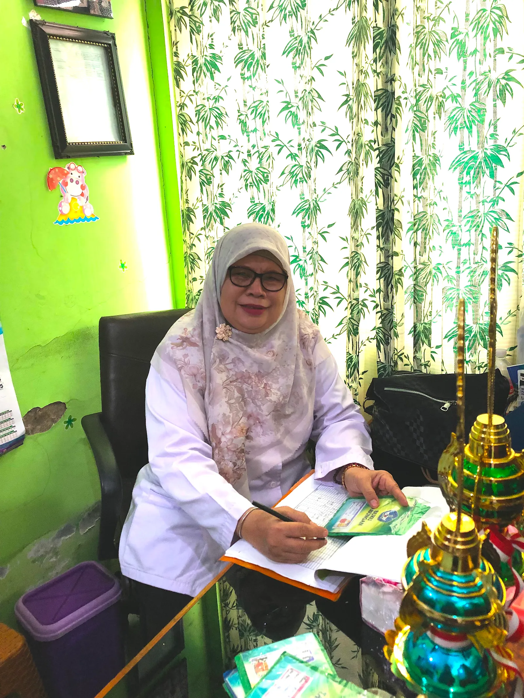
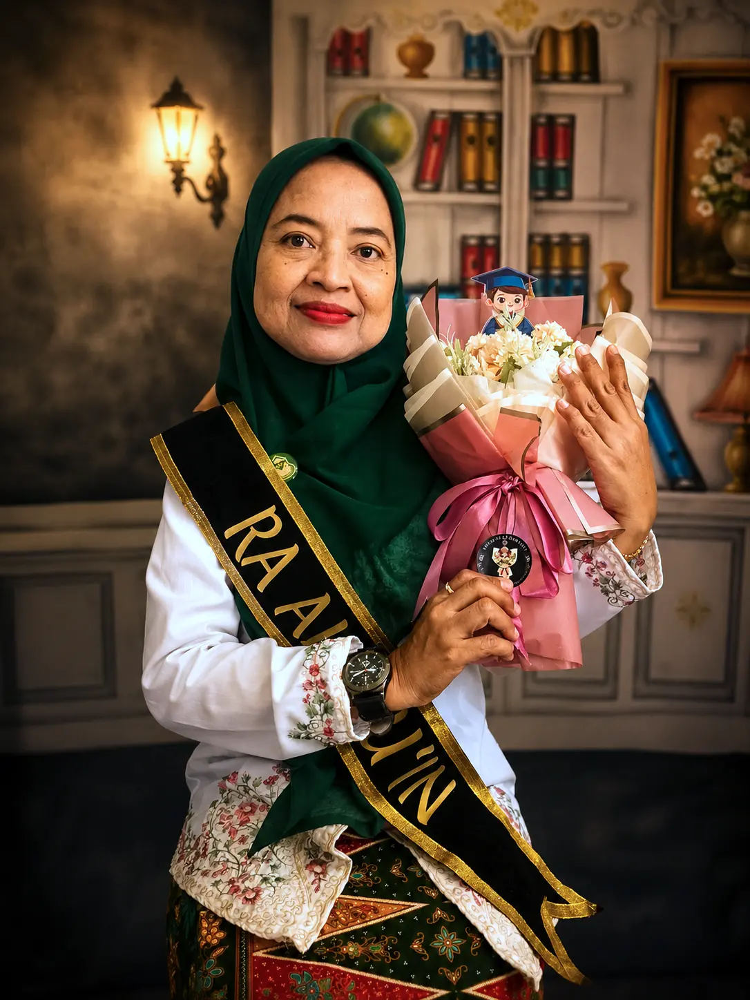
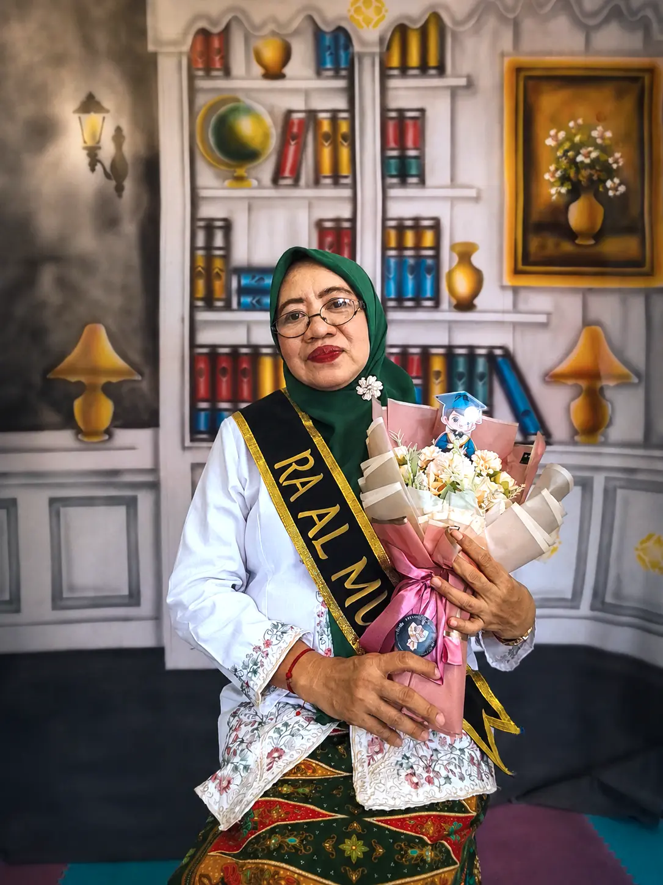
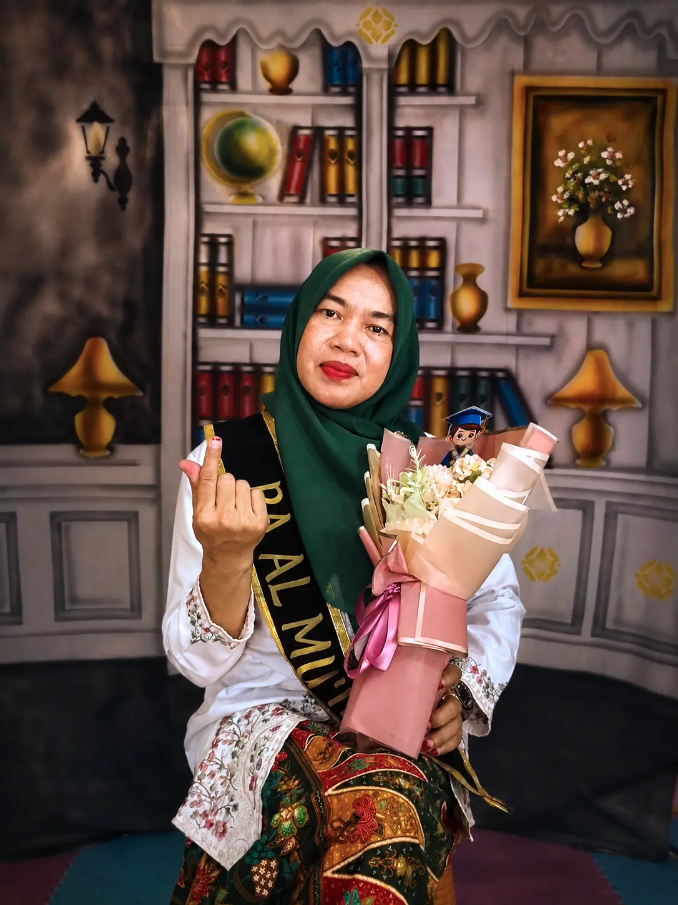
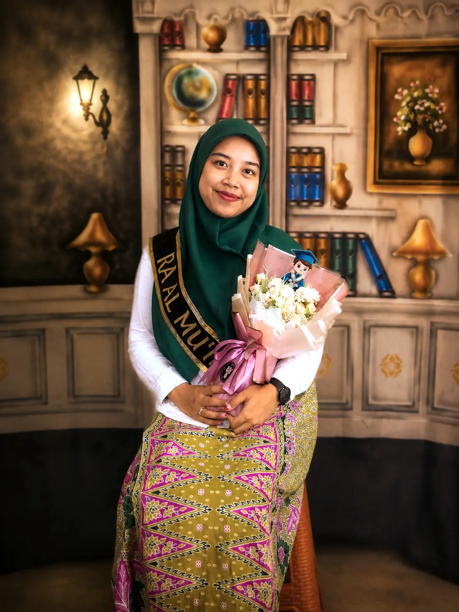

Adab harian
Anak dibimbing mengenal salam, doa, antre, berbagi, dan merawat barang sejak aktivitas pertama di kelas.
Memuat halaman sekolah...
Belajar, bermain, dan tumbuh dengan adab
TK Islami di Tanjung Priok, Jakarta Utara, untuk anak usia 4-6 tahun dengan pembiasaan ibadah, tahfidz ringan, eksplorasi kreatif, dan pendampingan guru yang penuh perhatian.
Anak dibimbing mengenal salam, doa, antre, berbagi, dan merawat barang sejak aktivitas pertama di kelas.
Hafalan surat pendek dilakukan bertahap lewat murajaah ceria, cerita, dan gerak yang mudah diikuti.
Belajar angka, bahasa, seni, sains sederhana, dan motorik melalui permainan yang terarah.
Program belajar
Kegiatan harian dirancang untuk membangun kemandirian, rasa ingin tahu, kemampuan sosial, dan kecintaan pada Al-Qur'an tanpa membuat anak merasa terbebani.
Usia 4-5 tahun, fokus adaptasi sekolah, bahasa, motorik, dan adab dasar.
Usia 5-6 tahun, persiapan SD, logika awal, literasi, dan proyek kelompok.
Iqra, doa harian, surat pendek, dan kisah nabi dengan pendekatan menyenangkan.
Seni, memasak sederhana, berkebun, olahraga, dan eksperimen aman untuk anak.
Informasi kelas
07.30-11.30 WIB dengan kegiatan indoor, outdoor, dan pembiasaan ibadah.
Ruang kelas terang, area bermain aman, pojok baca, mushola kecil, dan kebun mini.
Laporan perkembangan berkala dan dokumentasi aktivitas anak melalui grup kelas.
Guru dan staf
Tim sekolah mendampingi anak dengan pendekatan lembut, komunikasi terbuka dengan orang tua, dan pembiasaan Islami yang konsisten.

Mengawal kurikulum, budaya adab, dan komunikasi perkembangan anak bersama guru kelas.

Fokus adaptasi, motorik halus, dan kegiatan bermain terarah untuk anak usia 4-5 tahun.

Mendampingi literasi awal, numerasi, proyek kelompok, dan kesiapan anak menuju SD.

Murajaah surat pendek, doa harian, dan pengenalan huruf hijaiyah secara menyenangkan.

Mendampingi rutinitas harian, transisi kegiatan, makan bersama, dan kebutuhan emosi anak.
Kegiatan harian
Salam, doa, murajaah, dan cerita pembuka.
Eksplorasi angka, bahasa, sains, seni, dan motorik.
Bekal sehat, doa, berbagi, dan merapikan tempat.
Review kegiatan, persiapan pulang, dan salam.
Galeri sekolah
Susunan foto ini bisa diisi dokumentasi kelas, kegiatan outdoor, tahfidz pagi, atau kunjungan orang tua.
memuat foto dari galeri.....
Berita dan prestasi
Apresiasi untuk anak-anak yang berani mencoba, berlatih, dan membawa cerita baik dari kegiatan sekolah maupun lomba.
memuat data dan foto prestasi.....
Penerimaan peserta didik baru
Orang tua di Sungai Bambu, Tanjung Priok, dan sekitar Jakarta Utara dapat melihat kelas, bertemu guru, dan berdiskusi tentang kesiapan anak sebelum mendaftar.